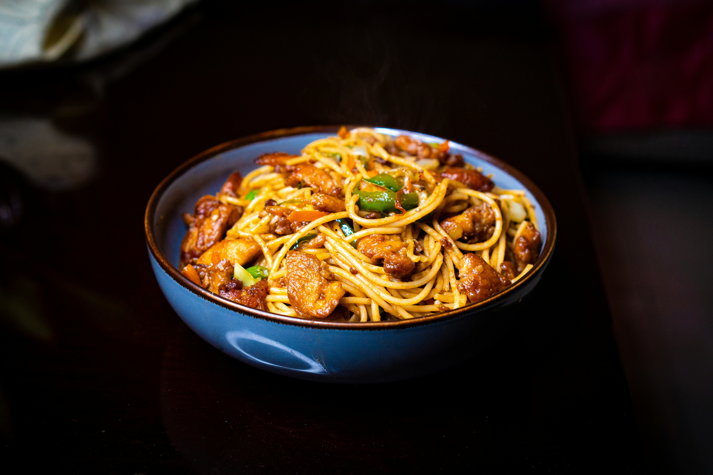

Noodles

Fried Chicken Noodles
Fried Chicken Noodles is a savory, fast-paced Asian stir-fry dish combining tender chicken slices, springy noodles, and crisp vegetables tossed in a high-heat wok.
Ingredients
- Noodles: 200g (7 oz) dried egg noodles or ramen noodles
- Chicken: 250g (8 oz) chicken breast or boneless thighs, thinly sliced
- Oil: 2 tablespoons vegetable or canola oil (divided)
- Garlic: 3 cloves, finely minced
- Ginger: 1 teaspoon, finely grated
- Onion: ½ medium, sliced
- Carrot: 1 small, julienned (cut into matchsticks)
- Cabbage: 1 cup, shredded
- Green Onions (Scallions): 3 stalks, cut into 1-inch pieces
- Soy Sauce: 2 tablespoons (regular or light soy sauce)
- Dark Soy Sauce: 1 teaspoon (for a rich, dark color)
- Oyster Sauce: 1 tablespoon
- Sesame Oil: 1 teaspoon
- Sugar: ½ teaspoon
- White Pepper: ¼ teaspoon
Steps
-
Cook the noodles: Boil the noodles according to the package instructions (usually 3–4 minutes). Drain them well, rinse under cold water to stop the cooking, and toss with a few drops of oil so they don't stick together. Set aside.
-
Mix the stir-fry sauce: In a small bowl, whisk together the soy sauce, dark soy sauce, oyster sauce, sesame oil, sugar, and white pepper. Set the bowl aside.
-
Sear the chicken: Heat 1 tablespoon of oil in a large wok or skillet over high heat. Add the sliced chicken and stir-fry for 3–4 minutes until it is cooked through and lightly browned. Remove the chicken from the wok and set it aside on a plate
-
Sauté the aromatics and veggies: Turn the heat down slightly to medium-high. Add the remaining 1 tablespoon of oil to the same wok. Toss in the minced garlic, ginger, and sliced onions, stirring rapidly for about 30 seconds until fragrant. Add the carrots and shredded cabbage. Stir-fry for 1–2 minutes until the vegetables are slightly wilted but still crisp.
-
Combine and toss: Return the cooked chicken and the drained noodles into the wok with the vegetables. Pour the prepared stir-fry sauce evenly over everything
-
Flash fry: Using tongs or a spatula, lift and toss everything together over high heat for 1–2 minutes. Ensure the noodles are completely coated in the sauce and everything is piping hot.
-
Finish and serve: Toss in the green onions during the last 30 seconds of cooking. Toss one final time, remove from the heat, and serve immediately.
Odin Recipes